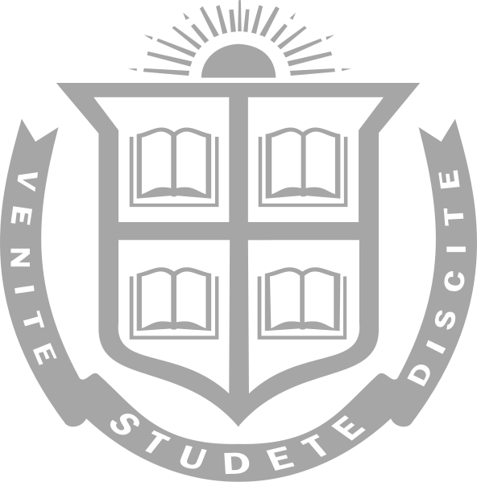

I'm an aspiring software engineer currently pursuing a combined B.S. in Computer Science & Philosophy at Northeastern University in Boston, MA.
I have a passion for technology and strong interest in any work around software development and data engineering!
Outside of work, I love working out, playing squash and chess, and listening to music!
Check some of the links below, where you can find more information about my education, experience, projects, and my music blog, where I talk about my favorite albums!

About Me


Education
ü뮂Äçüíª üíº
Experience

Projects
üéµ üíø